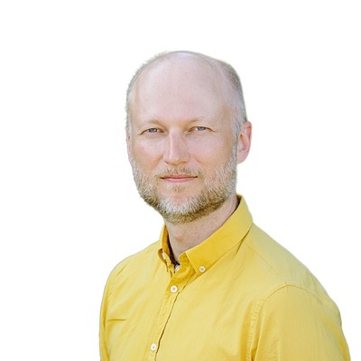
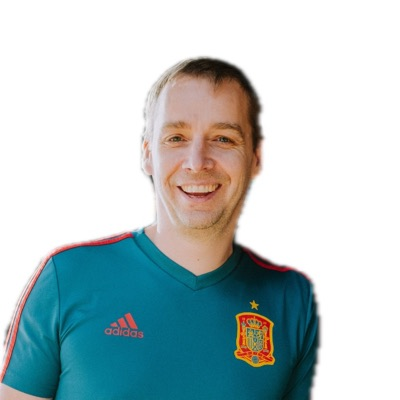

Instructor · Practitioner
Joosep Simm

Ships code at Gridraven.
Plepic · Design system
A graded editorial column. The rule above the eyebrow opens it, the rule under the role closes it, and nothing else draws a box. The set is graded as one photograph, so three faces read as one deck rather than three uploads.
Three columns on the page ground, no card of its own. 300px each, 32px apart, stretched to one height.
Instructor · Practitioner

Ships code at Gridraven.
Instructor · Practitioner

Builds the Plepic website and product.
Instructor · Practitioner
Builds Balancing.services.
Hover is the only time a sheet appears: the column rises 5px and a white surface with a soft shadow prints behind it. On a fine pointer the card also tilts up to 9° / 11° toward the cursor — motion this artboard cannot show.
Rest
Instructor · Practitioner
Ships code at Gridraven.
Hover · lifted
Instructor · Practitioner
Ships code at Gridraven.
Ten parts, and every one of them is answering something that went wrong. This is the component whole: drop a part and the reason it existed comes back.
.tt-seatAn untransformed wrapper that owns the hover and the data-tilt hook. A transformed element is hit-tested against its transformed box, so a card that tracked its own hover chased itself out from under a resting pointer: 86 enter and leave events in two and a half seconds, measured. The seat never moves, which is what makes both the hover and the per-frame measurement trustworthy..tt-cardA flex column at 18px 24px padding. It sets no width of its own: the Card fills the column it is handed, and the homepage team grid caps that track at 300px. The vertical padding keeps both rules off the cut edge; the horizontal padding is the margin the sheet shows once it appears..tt-card::beforeinset 0, --surface, opacity 0 at rest; on hover and focus-within it fades to 1 under --card-shadow-hover while the card rises. A ::before rather than the card's own background, because a background paints under the children's borders and both rules would vanish under the white the moment it faded in..tt-typeMono 9.5px, 0.16em, uppercase, --text-3 warming to --text-2 on hover, at line-height normal against the Line-Height Trap. It carries the 1.5px ink rule on its own top edge, so the rule that holds the column is a property of the first line rather than a separate element. Names the role. Carries no number..tt-nameDisplay 700 at 1.4rem, a flex row on align-items: baseline. The baseline sits the set glyph on the name's own baseline, so the two read as one printed line and not as a name with a badge beside it..tt-setglyphThe mark at 15px, the smallest sanctioned size, held at that width by flex: none when a long name claims the rest of the line. The ember head inside it belongs to the locked mark; it is not an accent element and does not spend the card's accent budget..tt-artSquare by aspect-ratio. Square corners, no frame, a tone instead of an edge: the ground is --bg-alt and is deliberately not swapped for white, because the multiply below pulls the cream up into the photograph as well as dropping the studio white down into the page. Every face picking up the same faint warm cast is the last step of the grade, and the one step identical for all three by construction..tt-inkinset 0, mix-blend-mode multiply. The blend and the filter sit on different elements on purpose: both on one node is the combination engines disagree about, and a filtered image inside a blending wrapper renders the same everywhere..tt-portraitA real photograph, in colour, object-fit cover under --photo-grade. One chain, one selector, all three faces, no per-person override: if a face needs its own number the grade is wrong, not the face. Framing is the exception and it is geometry, never colour, so each card carries a translate and a scale per person..tt-roleThe present-tense sentence in body on --text-2, employer in ink because it is the only word a reader scans for. It is also the part that grows: flex: 1 takes the spare height, so the closing 1px rule lands on one line across a row of unequal text.The Card obeys flat-by-default rather than claiming an exception to it. Nothing at rest but the two rules, and the sheet only while a pointer or the keyboard is on it.
No tier and no power number on a card that carries a face. It ranks a real person in public, and the number behind the rank cannot be verified.
The card’s only warm pixel is the ember head inside the locked mark, so a row of three cards still leaves the viewport’s one accent unspent.
The lift is CSS, the rotation is JavaScript. With the module absent, on touch, and under reduced motion the sheet still appears and the card still rises. It simply does not rotate.
A 1.5px ink rule sits above the eyebrow. It is the card's only hard edge; there is no border and no radius.
Every portrait carries the same --photo-grade and multiplies into the page ground. Never grade a face on its own.
A 15px butterfly closes the name line. It breathes on its own and beats its wings when the card is hovered.
--surface and --card-shadow-hover exist only under a pointer. At rest the card owns no shadow at all.